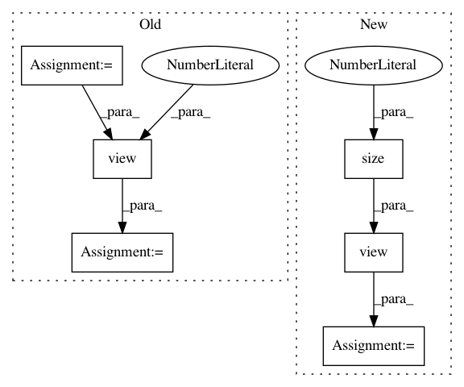

f31fdd7b4c3fd5790c9e727e74ae58c365838500,torch_geometric/nn/functional/lin.py,,lin,#Any#Any#Any#,4
Before Change
def lin(features, weight, bias):
weight = weight.t()
outs, ins = weight.size()
weight = weight.view(outs, ins, 1)
return conv1d(features, weight, bias)
After Change
weight = weight.view(*weight.size(), 1)
weight = weight.transpose(0, 1)
features = features.view(1, features.size(0), weight.size(1))
features = features.transpose(2, 1)
return conv1d(features, weight, bias).squeeze().t()
In pattern: SUPERPATTERN
Frequency: 3
Non-data size: 6
Instances
Project Name: rusty1s/pytorch_geometric
Commit Name: f31fdd7b4c3fd5790c9e727e74ae58c365838500
Time: 2017-10-19
Author: matthias.fey@tu-dortmund.de
File Name: torch_geometric/nn/functional/lin.py
Class Name:
Method Name: lin
Project Name: eriklindernoren/PyTorch-GAN
Commit Name: a4697d7e45e66a3264eb56dcf489d67d4df40d23
Time: 2018-04-23
Author: eriklindernoren@gmail.com
File Name: implementations/cgan/cgan.py
Class Name: Discriminator
Method Name: forward
Project Name: eriklindernoren/PyTorch-GAN
Commit Name: a4697d7e45e66a3264eb56dcf489d67d4df40d23
Time: 2018-04-23
Author: eriklindernoren@gmail.com
File Name: implementations/cgan/cgan.py
Class Name: Generator
Method Name: forward